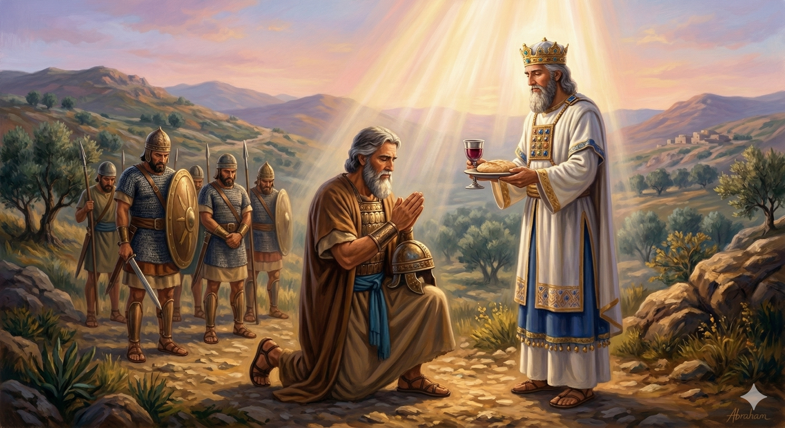

아브라함이 318명의 군사를 이끌고 밤에 기습하여 롯을 구출하는 장면
"아브람이 그의 조카가 사로잡혔음을 듣고 집에서 길리고 훈련된 자 삼백십팔 명을 거느리고 단까지 쫓아가서 그가 그 종들을 나누어 밤에 그들을 쳐서 패배시키고 다마스커스 왼편 호바까지 쫓아가서 모든 빼앗겼던 재물과 자기의 조카 롯과 그의 재물과 또 부녀와 친척을 다 찾아왔더라 아브람이 돌아올 때에 소돔 왕이 사웨 골짜기 곧 왕의 골짜기로 나와 영접하고 살렘 왕 멜기세덱이 떡과 포도주를 가지고 나왔으니 그는 지극히 높으신 하나님의 제사장이었더라 그가 아브람에게 축복하여 이르되 천지의 주재이시요 지극히 높으신 하나님이여 아브람에게 복을 주옵소서" — 창세기 14:14-19
창세기 14장은 고대 근동의 전쟁 이야기를 배경으로 펼쳐집니다. 네 왕과 다섯 왕의 연합 전쟁에서 소돔이 패배하고, 그 와중에 아브라함의 조카 롯이 포로로 잡혀갑니다. 이 소식을 들은 아브라함은 지체 없이 318명의 훈련된 종들을 이끌고 추격에 나섭니다. 이 숫자는 작은 군대처럼 보이지만, 아브라함이 오랫동안 가나안 땅에서 실력 있는 족장으로 성장해 있었음을 보여줍니다. 밤의 기습이라는 대담한 전략으로 그는 압도적으로 큰 군대를 물리치고 롯을 구출합니다.
승리 후 살렘 왕 멜기세덱과의 만남은 이 이야기의 신학적 절정입니다. 멜기세덱은 '의의 왕'이라는 뜻으로, 그는 "지극히 높으신 하나님의 제사장"으로 소개됩니다. 그가 떡과 포도주를 가져와 아브라함을 축복하는 장면은 후에 히브리서에서 예수 그리스도의 영원한 제사장 직분을 예표하는 것으로 해석됩니다(히 7장). 아브라함은 전쟁에서 빼앗은 전리품의 십분의 일을 멜기세덱에게 드림으로써, 이 만남이 단순한 정치적 외교가 아니라 하나님 앞에 드리는 예배임을 고백합니다. 반면 소돔 왕이 전리품을 요구하자, 아브라함은 "네 발의 신발 끈이라도 취하지 않겠다"고 단호하게 거절하며, 자신의 부가 하나님으로부터 온 것임을 세상 앞에 선언합니다.

살렘 왕 멜기세덱이 떡과 포도주를 가져와 아브라함을 축복하는 장면
아브라함은 롯이 자신에게 상처를 주고 좋은 땅을 택해 떠난 사람임에도 불구하고, 위험에 처했다는 소식을 듣자마자 주저 없이 달려갑니다. 진정한 사랑은 조건을 따지지 않습니다. 우리 주변에 어려움에 처한 사람이 있을 때, 과거의 갈등이나 서운함을 이유로 외면하지는 않았는지 돌아볼 필요가 있습니다. 아브라함처럼 먼저 손을 내미는 용기와 관대함이 우리에게도 필요합니다.
또한 아브라함이 소돔 왕의 제안을 거절한 것은 매우 중요한 신앙의 결단입니다. 세상이 주는 부귀와 명예를 받아들이면, 훗날 사람들이 "아브라함의 부는 소돔 왕이 만들어 준 것"이라고 말할 수 있기 때문입니다. 그는 자신의 영광과 풍요가 오직 하나님께로부터 온다는 것을 명확히 하고 싶었습니다. 우리의 성공과 축복이 어디서 비롯된 것인지 세상 앞에 고백하는 삶이 곧 믿음의 삶입니다.
당신이 도움을 주어야 할 사람이 혹시 당신에게 상처를 준 사람은 아닙니까?
아브라함은 롯을 위해 모든 것을 걸었습니다.
그리고 세상이 주는 보상을 거절하며 하나님만을 자신의 상급으로 삼았습니다.
오늘, 당신의 관대함과 거절이 하나님 앞에 드리는 예배가 되게 하십시오.